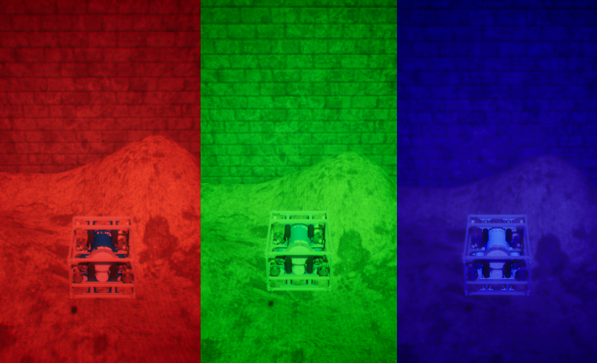
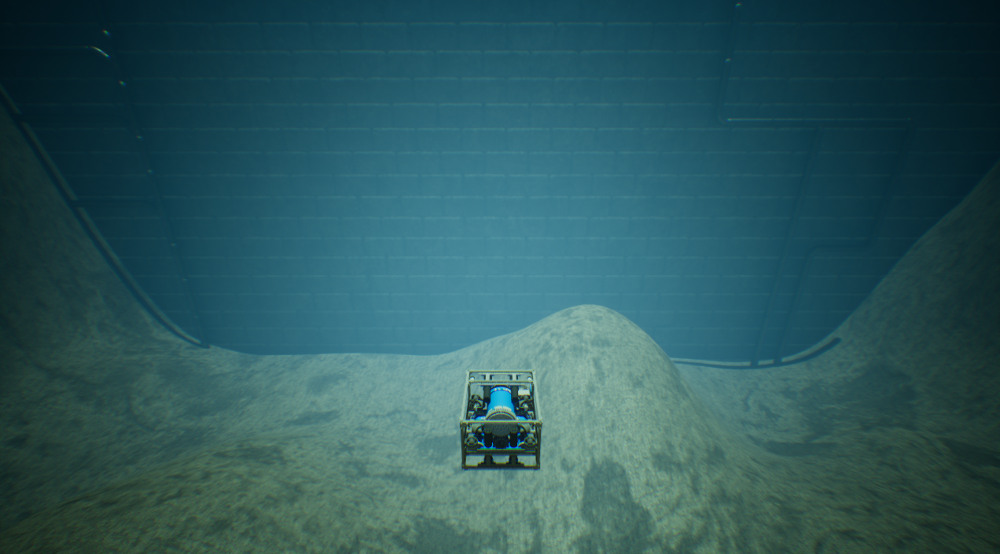
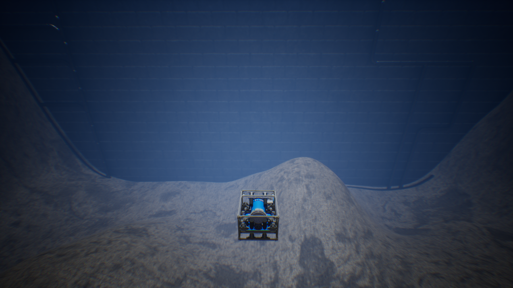
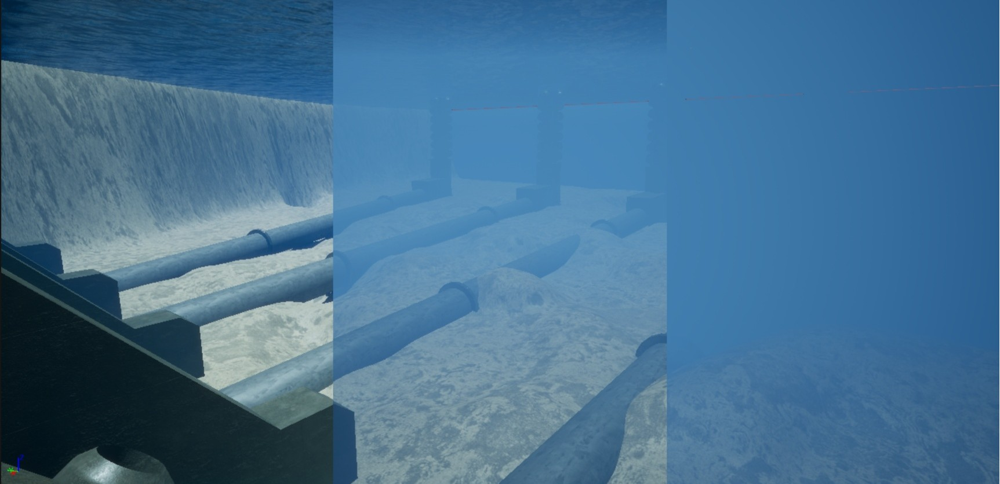

水体外观命令
HoloOcean 世界提供了一个水体颜色命令，您可以调用该命令来调整水体颜色，以满足您的各种需求。
水体颜色命令
您可以在模拟运行时使用水体颜色命令，以全 RGB 范围更改水体颜色。

以下是一些可以配置的水彩颜色示例：

颜色配置 = `(0.3, 0.75, 0.6)`

颜色配置 = `(0.3, 0.4, 0.5)`
通过编程方式
以下示例演示如何使用水色命令将水的颜色更改为红色、绿色或蓝色：
with holoocean.make("...") as env:
while True:
if 'r' in pressed_keys:
env.water_color(1, 0, 0)
if 'g' in pressed_keys:
env.water_color(0, 1, 0)
if 'b' in pressed_keys:
env.water_color(0, 0, 1)
with holoocean.make("...") as env:
while True:
if 'u' in pressed_keys:
env.water_color(0.3, 0.75, 0.6) # 第一张图片
if 'i' in pressed_keys:
env.water_color(0.3, 0.4, 0.5) # 第二张图片
水雾控制指令
水雾控制指令通过调节雾的浓度、深度和颜色来控制水下能见度。

您可以配置以下参数：
-
fogDensity：控制雾的整体厚度。范围：0.0 – 10.0 -
fogDepth：雾效开始出现的距离摄像机的距离。范围：0.0 – 10.0（默认值 = 3.0） -
color_R：雾的红色通道。范围：0.0 – 1.0（默认值 = 0.4） -
color_G：雾的绿色通道。范围：0.0 – 1.0（默认值 = 0.6） -
color_B：雾的蓝色通道。范围：0.0 – 1.0（默认值 = 1.0）
通过编程方式
以下示例展示了如何使用水雾命令实现上图中间所示的可见度级别：
with holoocean.make("...") as env:
while True:
env.water_fog(0.8) # 将雾浓度设置为 0.8
此外，您还可以修改雾的深度和颜色。
注意
有关如何使用这些命令的更多信息，请参阅 API 文档：WaterColorCommand 和 WaterFogCommand。